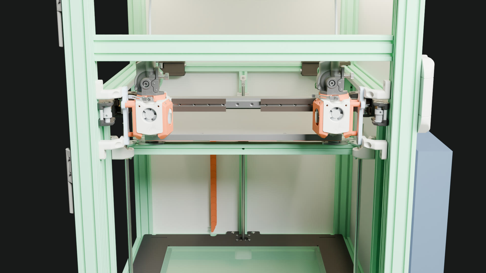

The tool changes, at the docks
The committed tool-change macro sequence played on the lite-30 model and rendered with Blender Cycles. The carriage fetches the left head (T0), carries it out and back, returns it, then does the same with the right head (T1). It goes empty → Left → empty → Right → empty. Which head is on the carriage comes from the dock geometry, not from the timeline's tool field.
The whole sequence, 16 s
Seen from the front, looking at both docks. 241 frames at 15 fps, 1280×720: every second frame of the 30 fps timeline. The timing follows the commanded speeds, without acceleration.
| Time | Move | Carriage holds |
|---|---|---|
| 0.0 s | start, carriage empty | none |
| 5.0 s | seq 20: push into the left dock to attach Y −68.96, T0 couples | Left |
| 8.1 s | seq 31: pull out of the left dock, T0 stays | none |
| 10.0 s | seq 35: push into the right dock, T1 couples | Right |
| 13.1 s | seq 45: pull out of the right dock, T1 stays | none |

T0 pickup: park X 21, attach Y −68.96 (seq 20)
The end of the slow push into the left dock. The carriage is at the dock and the left head is on it, 6 mm forward of where it rests: the push to the keyslots' large opening. The right head stays in its dock.
T0 return: the same pose, 1 mm higher (seq 30)
The carriage brings the left head back to the same X and Y at Z 11, still carrying it. The next move, seq 31, pulls out and leaves the head in the dock. At this distance the 1 mm in Z barely shows. The bed sits 1 mm lower than in the pickup still.
How it is made
- Frames:
platform/freecad/timeline.pyturnscad/klipper/toolchange_timeline.jsonlinto group translations through the rig,cad/motion/rig.json. - Meshes: exported once at the model pose. Each moving group (bed, gantry, belt, carriage, Left, Right) is in buckets of its own. Blender moves the groups per frame; nothing is re-exported. The belts show only their rigidly moving part, as in the FreeCAD player, and the docks' carriage copies are left out.
- Render:
platform/render/render.py --frames, Cycles on a GPU. The video uses 32 samples, denoised. The stills use 128 samples at 1920×1080, from the same export and camera. - Rerun it:
python3 cad/motion/render_frames.py prepare, thensubmit(batch lane),encodeandstills --at 21,-68.96.
Rendered from vt350-lite-30.FCStd, opened read-only (file unchanged), with Blender Cycles, export key e88719a2ba210c88. Timeline and rig as of a508403. The model includes Orbiter Projects / LDO geometry (CC BY-NC-SA 4.0), so these renders are shared non-commercially, with attribution. Written 2026-11-10 for vt350#135 (AC4, AC5).